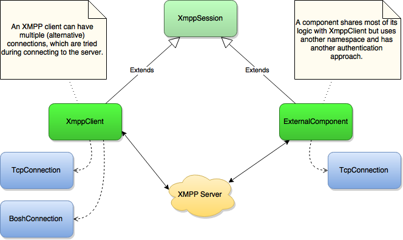

Getting Started
Establishing an XMPP Client Session
The first thing you want to do in order to connect to an XMPP server is creating a XmppClient object:
XmppClient xmppClient = XmppClient.create("domain");
The XmppClient instance is the central object. Every other action you will do revolves around this instance (e.g.
sending and receiving messages).
A session to an XMPP server can be established in three ways (connection methods):
- By a normal TCP socket connection
- By a BOSH connection (XEP-0124)
- By a WebSocket connection (RFC 7395)
By default, the XmppClient will try to establish a connection via TCP first during the connection process. If the
connection fails, it will try to discover alternative connection methods and try to connect with one of them (usually
BOSH). The hostname and port is determined by doing a DNS lookup.
Configuring the Connections
You can also configure different connection methods manually (e.g. if you want to use another port or want to use a proxy).
In order to create immutable and reusable configuration objects (which could be reused by multiple sessions) and to avoid huge constructors, the Builder Pattern is used to create custom configurations:
TcpConnectionConfiguration tcpConfiguration = TcpConnectionConfiguration.builder()
.hostname("localhost")
.port(5222)
.build();
Here's another example how to configure a BOSH connection (which would connect to the
URL http://domain:5280/http-bind/ over a HTTP proxy server):
BoshConnectionConfiguration boshConfiguration = BoshConnectionConfiguration.builder()
.hostname("domain")
.port(5280)
.proxy(new Proxy(Proxy.Type.HTTP, new InetSocketAddress("hostname", 3128)))
.path("/http-bind/")
.build();
And this is how you would configure a WebSocket connection to wss://host:7443/ws (requires xmpp-websocket
dependency):
WebSocketConnectionConfiguration webSocketConfiguration = WebSocketConnectionConfiguration.builder()
.hostname("host")
.port(7443)
.path("/ws/")
.sslContext(sslContext)
.channelEncryption(ChannelEncryption.DIRECT)
.build();
Now let's pass them to the XmppClient to tell it that it should use them:
XmppClient xmppClient = XmppClient.create("domain", tcpConfiguration, boshConfiguration);
During connecting, the client will try all configured connections in order, until a connection is established.
Here's an overview over the relation between the session and connections:

Securing the Connection
You can set a custom SSLContext by configuring it like this:
TcpConnectionConfiguration tcpConfiguration = TcpConnectionConfiguration.builder()
.channelEncryption(ChannelEncryption.OPTIONAL)
.sslContext(sslContext)
.hostnameVerifier(hostnameVerifier)
.build();
Note that the use of a custom HostnameVerifier is possible but not recommended in most cases, since the built-in logic
to verify the host name does a good job.
Preparing the Session
Before connecting to a server, you should configure your XMPP session.
You might want to do one of the following:
- Adding event listeners in order to listen for inbound messages, roster and presence changes or to modify outbound messages.
- Configuring extensions, e.g.
- Enable or disable certain extensions
- Setting an identity for the connection (Service Discovery)
- etc.
Here are some examples:
// Listen for presence changes
xmppClient.addInboundPresenceListener(e -> {
Presence presence = e.getPresence();
// Handle inbound presence.
});
// Listen for messages
xmppClient.addInboundMessageListener(e -> {
Message message = e.getMessage();
// Handle inbound message.
});
// Listen for roster pushes
xmppClient.getManager(RosterManager.class).addRosterListener(e -> {
// Roster has changed
});
Connecting to a Server
If you have prepared your session, you are now ready to connect to the server:
try {
xmppClient.connect();
} catch (XmppException e) {
// ...
}
The session will try to connect to the XMPP server by using the configured connections in order.
Connecting involves opening the initial XMPP stream header and negotiate any features offered by the server (most likely only TLS).
Authenticating and Binding a Resource
After connecting, you have to authenticate and bind a resource, in order to become a “connected resource”. Both steps are understood as “login”:
try {
xmppClient.login("username", "password", "resource");
} catch (AuthenticationException e) {
// Login failed, because the server returned a SASL failure, most likely due to wrong credentials.
} catch (XmppException e) {
// Other causes, e.g. no response, failure during resource binding, etc.
}
Initial presence is sent automatically, so that you are now an "available resource" (you will appear online to your contacts) and can now start sending messages.
Sending a Message
Sending a simple chat message works like this:
xmppClient.send(new Message(Jid.of("juliet@example.net"), Message.Type.CHAT));
Changing Availability
If you want to change your presence availability, just send a new presence with a “show” value.
xmppClient.send(new Presence(Presence.Show.AWAY));
Closing the Session
Closing a session is simply done with:
xmppClient.close();
Note, that XmppClient implements java.lang.AutoCloseable, which means you can also use the try-with-resources
statement, which automatically closes the session:
try (XmppClient xmppClient = XmppClient.create("domain")) {
xmppClient.connect();
} catch (XmppException e) {
// handle exception
}